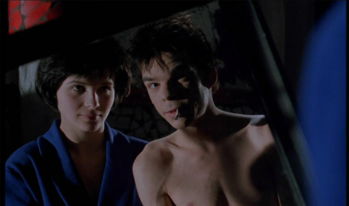
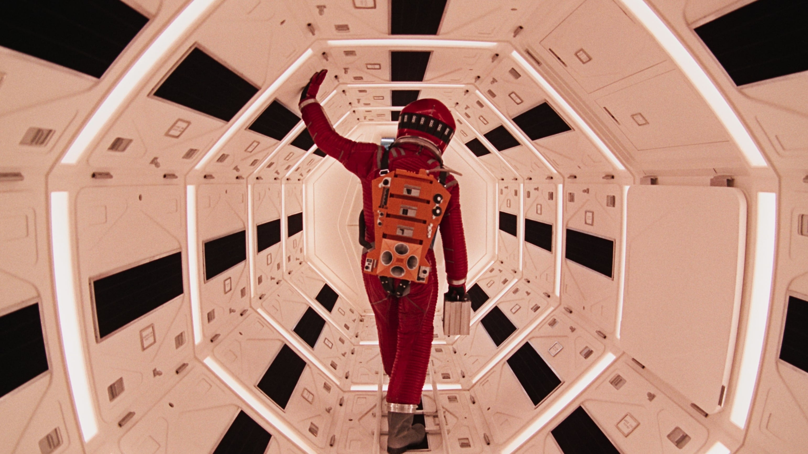

Storyline: Barry Egan hates himself and hates his life. The only
male among eight siblings, Barry is treated poorly by his
overbearing sisters. Despite owning his own business, he has gotten
nowhere in life largely because of his insecurities. He leads a
solitary life, which allows him to hide his violent outbursts that
occur when he's frustrated. His solitude however allows him to
think, he stumbling upon a scheme to travel the world on a pittance,
travel which he has never done. Concurrently, he meets two people
who pull him in two different directions. The first is Lena Leonard,
a friend of his sister Elizabeth. Barry is slow to realize that Lena
is attracted to him, he making her make all the first moves. Lena is
eventually able to get Barry out of his shell, she who sticks around
despite his obvious problems. His burgeoning relationship and thus
new life with Lena is threatened by the second, "Georgia", who he
contacted in an effort to alleviate his loneliness. Georgia and her
"band of brothers" do whatever they can get get out of Barry what
they want, no matter the price to Barry.
Mauvais Sang

Director: Leos Carax
Cast: Juliette Binoche, Denis Lavant
Genre: Crime, Drama
Storyline: Marc (Michel Piccoli) recruits Alex (Denis Lavant), son
of his former, now dead colleague. Alex is a card shark with a big
dream to go out to the world and leave his own mark. His
determination leads him to break up with his girl friend, Lise
(Julie Deply). Alex initially refuses to help Marc and Hans for
their "job" of stealing the culture of new drug. But Anna (Juliette
Binoche)'s charm and beauty were irresistible. Alex joins the
elders. Alex's dance to David Bowie's Modern Love illustrates
unfolding emotions of young Alex moving into an adult (graying if
not dying) world. The interplay among the generations, between
genders, among social classes, memory and hopes, all played against
black and white and occasional red back drop. Anna's cobalt blue
robe punctuates the moment when Alex confesses his love for her.
2001: A Space Odyssey

Director: Stanley Cubrick
Cast: Keir Dullea, Gary Lockwood
Genre: Adventure, Sci-Fi
Storyline: "2001" is a story of evolution. Sometime in the distant
past, someone or something nudged evolution by placing a monolith on
Earth (presumably elsewhere throughout the universe as well).
Evolution then enabled humankind to reach the moon's surface, where
yet another monolith is found, one that signals the monolith placers
that humankind has evolved that far. Now mankind, assisted by
artificial intelligence (such as HAL), must dare to encounter the
monolith placers. If successful we will achieve the next step in
evolution, whatever that may be.